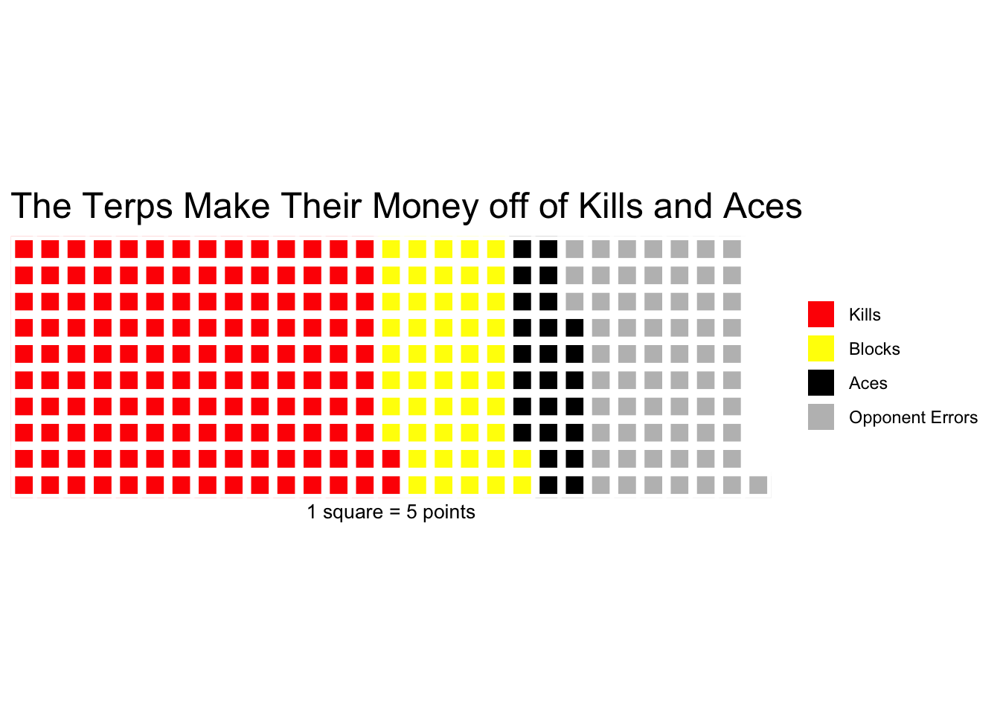
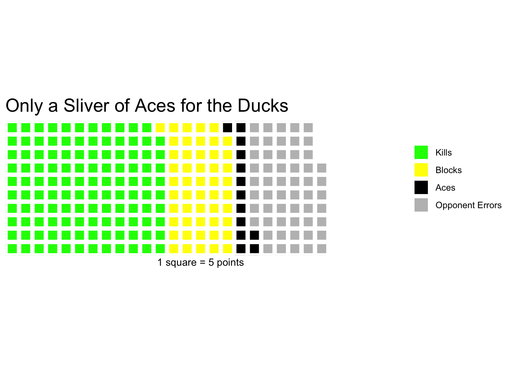
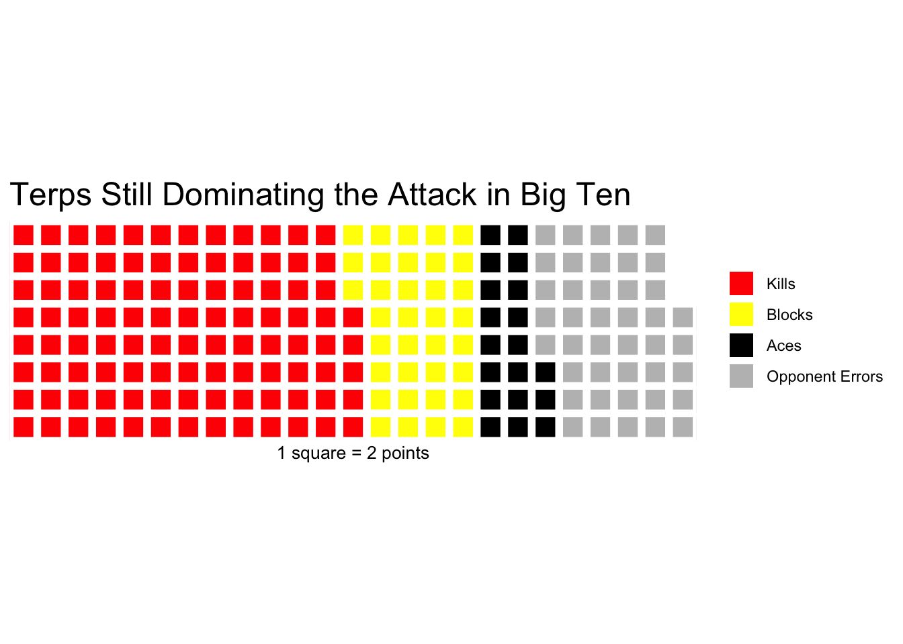
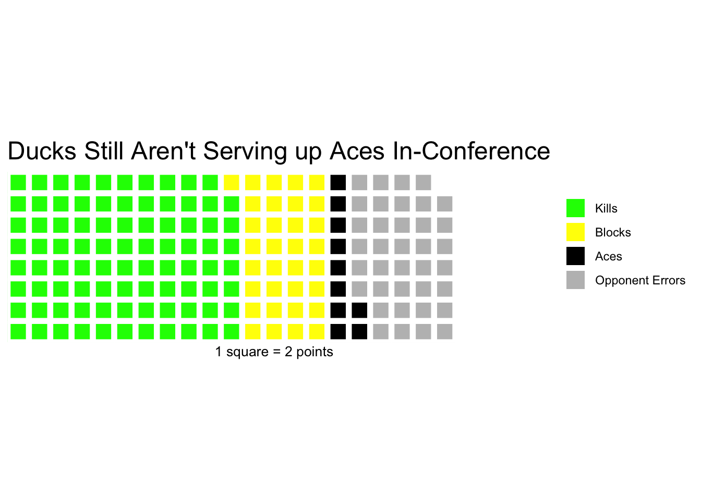

Same Pond, Different Animals: The Terps are Actually Outplaying the Ducks This Year
volleyball
Maryland
Author
Sam Benning
Published
October 10, 2024
We don’t need to be scared just yet, Terps fans. While our beloved volleyball team has had a strong overall record (10-5), they sit at 1-3 against Big Ten opponents so far. On the other hand, new conference addition Oregon Ducks (12-2) boast a 3-1 conference record and sit in the top three in the Big Ten rankings. However, the numbers will show us that the Terps may actually be as good, or better, than their semi-aquatic competitor. In this post, we will compare point scoring data for the Terps and fellow Big Ten member Oregon Ducks to figure out who will rule the waters.
First, we can load in statistics from online to RStudio. This contains all game logs and stats from each NCAA volleyball match this year. We will also use some pre-made coding libraries to help us analyze/summarize the data and create some charts.
Code
library(tidyverse)
── Attaching core tidyverse packages ──────────────────────── tidyverse 2.0.0 ──
✔ dplyr 1.1.4 ✔ readr 2.1.5
✔ forcats 1.0.0 ✔ stringr 1.5.1
✔ ggplot2 3.5.1 ✔ tibble 3.2.1
✔ lubridate 1.9.3 ✔ tidyr 1.3.1
✔ purrr 1.0.2
── Conflicts ────────────────────────────────────────── tidyverse_conflicts() ──
✖ dplyr::filter() masks stats::filter()
✖ dplyr::lag() masks stats::lag()
ℹ Use the conflicted package (<http://conflicted.r-lib.org/>) to force all conflicts to become errors
Rows: 5235 Columns: 39
── Column specification ────────────────────────────────────────────────────────
Delimiter: ","
chr (4): team, opponent, home_away, result
dbl (34): ncaa_id, team_score, opponent_score, s, kills, errors, total_atta...
date (1): date
ℹ Use `spec()` to retrieve the full column specification for this data.
ℹ Specify the column types or set `show_col_types = FALSE` to quiet this message.
Now let’s take a look at all of Maryland’s games from this season, in and out of conference. We will obtain the totals for each stat that goes into points for the Terps.
We can create a waffle chart using this vector that will display the distribution of where Maryland’s points are coming from. This will be on a scale that is readable, thus why we divide the data in the vector by 5, making 1 square equal to 5 points scored for a given stat.
Code
waffle(md/5,rows =10,title ="The Terps Make Their Money off of Kills and Aces",colors =c("red","yellow", "black", "grey"),xlab ="1 square = 5 points")

From the waffle chart data, we can see that the Terps are hungry for kills and aces. more than half of their points come from these two. It may look like aces aren’t a huge factor, but that is quite a high number compared to other teams (see Oregon below). The other two stats are relatively evenly distributed, with some weight coming from their opponents screwing up - likely a product of some lower level teams that they played before conference play.
We will next go through the same process to obtain data for Oregon.
One important piece to note is that Oregon has scored 223 less points than Maryland this year (derived from summing up their respective totals). This difference is accounted for as an extra column in the vector being made for Oregon, so that their chart is on the same scale as Maryland:
Now, we can load in the data using our favorite food-based chart, with the color “white” adding in blank space to account for the difference so the charts look the same.
Code
waffle(ore/5,rows =10,title ="Only a Sliver of Aces for the Ducks",colors =c("green","yellow", "black", "grey", "white"),xlab ="1 square = 5 points")

Look at that small slice that takes up aces! The Ducks have not been scoring much from their serving - the Terps appear to have doubled them in this stat. The other proportions show to be relatively even, but the Ducks have not kept up with the Terps this year when it comes to their offensive attack.
As mentioned, this is from all of the season. Oregon has done quite well this year in-conference, and Maryland quite the opposite. So, let’s see if these trends hold true in conference play:
We will make the same summary and vectors for each team, but will filter for games against Big Ten opponents, which have been their last four games (after September 22nd).
Since there are less games for just conference play, we can make our scale different so that visually the waffle charts look similar for this data. Now, each square is only worth 2 points (as we divided the vector by 2), but we can still see the distribution and weights of each stat.
Code
waffle(mdconf/2,rows =8,title ="Terps Still Dominating the Attack in Big Ten",colors =c("red","yellow", "black", "grey"),xlab ="1 square = 2 points")

Well, it looks like Maryland holds pretty much the same standards for itself in Big Ten matchups. Those aces are doing a good amount of damage. I was clearly wrong in my analysis of opponent errors as well - Power Five teams still make errors, too. Let’s see how Oregon compares.
Through 4 games, Maryland has also scored 63 more points than Oregon in Big Ten play. We account for that again.
Code
waffle(oreconf/2,rows =8,title ="Ducks Still Aren't Serving up Aces In-Conference",colors =c("green","yellow", "black", "grey", "white"),xlab ="1 square = 2 points")

Those Aces really aren’t helping them out much either. As we see, Maryland is again nearly doubling Oregon in this number. Yet, Oregon has a better record and have built some momentum moving forward. The Terps maintain a high-powered attack but there is something in between the lines that we would need to learn more about to figure out why they don’t have as good of a record as we may expect. Nevertheless, there is much hope for this Maryland team, as these numbers show that there is great potential.
When looking closer into their records over the course of the season, Oregon has played 10 fewer sets than Maryland. They have either blown teams out, or have been blown out, with only 4 of their games going more than 3 sets. Maryland has hung in there with some big-time opponents, taking a set off of #3 Penn State. Otherwise, they are consistently average to above average; they have a tough time finishing (mediocre) teams off. If Maryland can find balance in the rest of its attack, there’s a high ceiling to make some magic happen. Oregon, while relatively up and down, has found themselves ranked amongst the best teams in the country. So, is consistency key for the Terps, or will the boom/bust system keep the Ducks rolling? It’ll be interesting to see which holds better over the rest of the season.